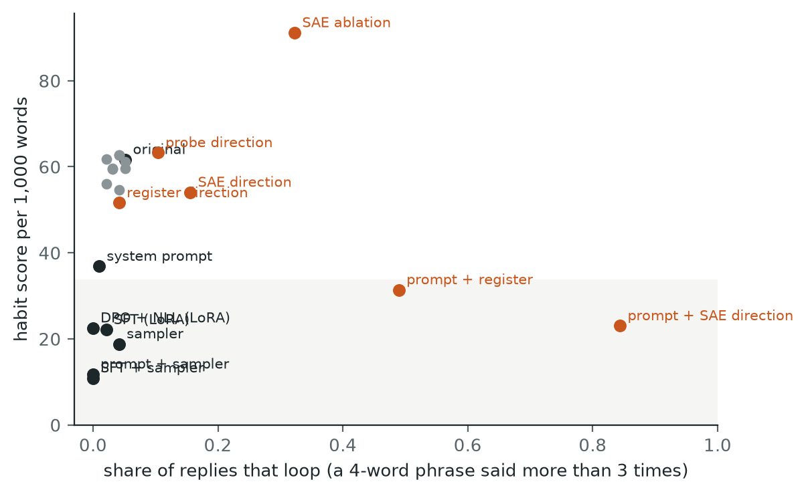
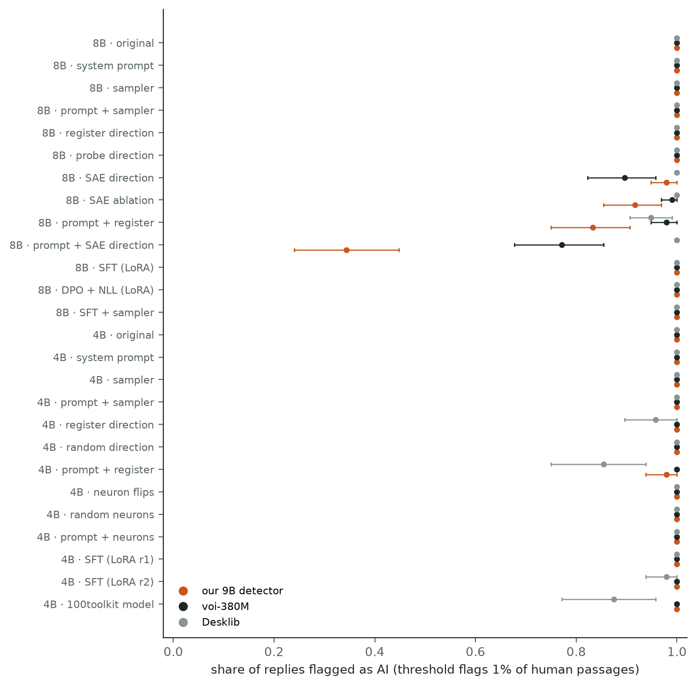
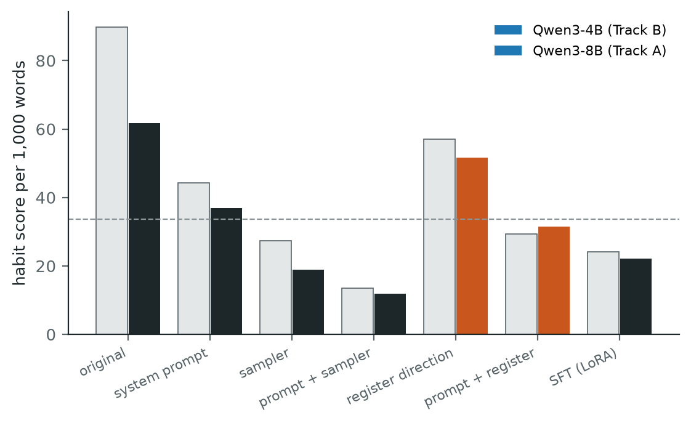

← Research·Model voice · Episode 3·Experiments·
Every way to remove slop, on the same 48 prompts: a prompt plus a sampler wins, steering barely beats random, and no method gets past a detector
Our earlier notes each tried a few ways to take the chat-assistant voice out of a model, on different prompts and with different rulers. Here every family (a system prompt, a sampler, three kinds of steering, SFT and DPO, and their combinations) runs on the same 48 prompts and is scored the same way.

results/per_reply.csv.Summary: the short answer and the key results
In short
Once every method faces the same prompts and the same rulers, which removes slop best?
A one-paragraph system prompt plus a backtracking sampler, with no change to the model, cut Qwen3-8B's chat-assistant habits from 61.7 to 11.8 per 1,000 words, with 94 of 96 replies inside the human range. Steering did little: a difference-of-means direction lowered habits by 10 points beyond random directions, a detector probe's direction and 16 SAE features did no better than random, and adding a system prompt on top made steered replies loop (49% and 84%). SFT and DPO LoRAs both reached 22 with the least drift on human text, and the SFT LoRA with the sampler matched the prompt plus sampler (10.9). No method that still writes normal text got past our 9B AI detector: it flagged 92-100% of their replies. The one arm it missed often (34% flagged) loops in 84% of its replies. A blind judge preferred the untouched model's reply over 11 of the 12 methods.
Key results
| What we tested | Result | Compared with |
|---|---|---|
| Which method removes the most habits without touching weights? | System prompt + sampler: 11.8 [9.8, 13.9], 94/96 replies in the human band, no loops | Original 61.7 [52.8, 71.3], 16/96; system prompt alone 36.9; sampler alone 18.8 |
| Does steering beat random directions of the same size? | Barely. Register direction 10.1 below the random mean [−15.7, −4.5]; SAE direction −4.6 [−12.4, +4.6]; probe direction +4.3 [−0.7, +9.5] | 3 norm-matched random directions per arm (range 54.7-62.8) |
| Does steering add to a system prompt? | It breaks the text. Prompt + SAE direction 23.0 with 84% of replies looping; prompt + register 31.4 with 49% looping | System prompt alone 36.9, 1% looping (Figure 2) |
| Do post-training arms do better? | SFT 22.1 and DPO 22.5 [19.1, 26.3], level with each other (paired +0.4 [−3.0, +3.7]), at the lowest drift (KL 0.045 and 0.028 nats per token); SFT + sampler 10.9 | Steering's drift 0.09-0.37; system prompt 0.14 |
| Does any method get past AI detectors? | No method that writes normal text. Our 9B detector flags 92-100% of replies of every arm with under 35% loops, at a threshold that flags 1% of human passages | The only arm it mostly misses: prompt + SAE direction (34% flagged, 84% looping) |
| What does a blind judge prefer? | The untouched model's reply, over 11 of 12 methods (prompt + sampler: 5 wins, 68 losses, 23 ties); only the sampler alone ties (12/11/73) | The judge passed 40/40 known-answer pairs, both orders |
| Does Episode 1's Qwen3-4B ranking hold under the new rulers? | Yes: prompt + sampler 13.5, 100toolkit's model 9.2, steering 57.1; every arm flagged by the 9B detector on 98-100% of replies | Same ordering as Qwen3-8B (Figure 4) |
01Introduction
Ask Qwen3-8B for a short blog post about remote work and it opens: "Remote work has become more than just a trend—it's a fundamental shift in how we approach employment and productivity." Give it one paragraph of style instructions and a sampler that backs up whenever it starts an em dash or a stock phrase, and the same request gets: "Remote work has changed how we think about time and space. I've seen it help people focus better, avoid the daily commute, and spend more time with family. But it's not all good." No weights changed and no activations were touched.
We already knew pieces of this. Episode 1 compared a prompt, a sampler, a register direction, neuron edits and a distilled LoRA on Qwen3-4B. The Taste Stack's first episode found that 16 SAE features steered a detector's score twice as far as a probe direction on Qwen3-8B emails. Sounds Like Me, Episode 3 trained SFT and GRPO on a voice reward. But each used its own prompts, model and rulers, so their numbers can't be lined up: the SAE result was scored on one detector only, the 4B note had no SAEs, and the voice note measured a different target. What was missing is one test where every family faces the same prompts and the same rulers.
| Note | Prompt / sampler | Direction steering | SAE features | SFT / preference | Same scorer for all |
|---|---|---|---|---|---|
| Model voice E1 (deslop, Qwen3-4B) | ✓ | ✓ | ✗ | SFT only | ✓ within the note |
| Taste Stack E1 (Qwen3-8B emails) | one prompt | ✓ probe | ✓ | ✗ | one detector only |
| Sounds Like Me E3 (voice) | ✓ | ✗ | ✗ | ✓ SFT, DPO, GRPO | a different target |
| This note | ✓ | ✓ two kinds | ✓ added and ablated | ✓ SFT, DPO | ✓ habits, an outside slop score, 3 detectors, damage, loops, a judge |
This note contributes:
- A head-to-head of 13 methods and 9 random controls on Qwen3-8B, every reply scored by one scorer (table.py).
- A replication: Episode 1's 13 Qwen3-4B arms re-scored with the same rulers.
- A negative result for steering: three kinds of direction move habits 0-10 points beyond random, and break text once combined with a prompt.
- A detector check: no method that keeps text fluent gets past our 9B detector.
02Setup
Prompts. Episode 1's 48 held-out requests: 10 topics × 4 genres (blog, LinkedIn post, explainer, opinion piece), plus 4 emails and 4 personal reflections. Two samples per prompt per arm, so 96 replies; the 48 prompts are the unit for every interval. Steering settings were chosen on Episode 1's 24 dev prompts (training topics), never these.
Two tracks. Qwen-Scope has SAEs for Qwen3-8B but not for Qwen3-4B (we checked the Hub on Nov 22), so the head-to-head (Track A) runs on Qwen3-8B with thinking off, every arm generated fresh. Track B re-scores Episode 1's saved Qwen3-4B-Instruct-2507 replies with the same rulers; nothing there was regenerated.
| Arm | What changes | Family |
|---|---|---|
| original | nothing | baseline |
| system prompt | Episode 1's one-paragraph plain-style instructions | prompt |
| sampler | backtracks when a banned habit appears (Episode 1's toolkit) | decoding |
| register direction | difference of means between the model's own replies with and without the system prompt (288 training prompts), subtracted at layer 18, −2 class gaps | steering |
| probe direction | minus the Taste Stack E1 layer-18 AI-vs-human probe's weights, 32% of the residual norm | steering |
| SAE direction | minus the summed decoder directions of the 16 most AI-leaning layer-18 SAE features, 32% of the residual norm | steering (SAE) |
| SAE ablation | removes those 16 features' decoded part (c = 1) | steering (SAE) |
| random (×3 each) | a random direction at the register, probe and SAE direction's chosen size | control |
| SFT (LoRA) | LoRA on the best of three prompt + sampler replies to each of 235 training prompts that passed Episode 1's filter, from the bare prompt | post-training |
| DPO + NLL (LoRA) | DPO (β 0.1) on the same teacher reply against the original model's reply, plus an NLL term on the teacher reply that anchors fluency | post-training |
| combinations | prompt + sampler, prompt + register, prompt + SAE direction, SFT + sampler | combined |
The scorer, applied to every reply of both tracks:
- Habit score (the primary measure) and the in-band count (replies at or under 33.6).
- EQ-Bench's slop score, computed with its own code, an outside measure our sampler was not built on.
- Three AI detectors: our Qwen3.5-9B slop detector, voi-slop-detect-380M and Desklib, each at a threshold that flags 1% of the 318 human passages (it flags 4 of 318 for each). A reply is flagged when it is on the AI side.
- Task fit (genre checks: a stance in an opinion piece, a greeting in an email, first person in a reflection) and invented claims (a made-up study or statistic).
- Damage: KL drift on 24 human passages (how far the method moves the model's next-word predictions on text a person wrote, nats per token) and a 30-question factual quiz.
- Loops: a reply loops when any 4-word phrase appears more than three times. Earlier notes found fluency and voice checks that passed looping text, so this is reported for every arm.
- A blind judge (gemma-3-27b-it, another family from both generators): each arm's reply against the original's for the same prompt and sample, "which is better writing for this request?", in both orders; a win or loss needs both orders to agree, otherwise a tie.
- Pangram, the commercial detector, has a scorer ready (pangram.py) but was not run: we have no key.
What counts as success, fixed in the plan: a method must (1) lower the habit score with a paired interval below zero, (2) beat random directions of the same size, if it steers, (3) keep loops and task fit near the original's, and (4) show the gain on the outside slop score too, not only on our regexes.
03How the study was run
- Plan. Arms, grids, the selection rule, the scorer, the judge's known-answer test and six predictions were written down and committed before any reply was generated.
- Inputs. 288 training prompts × the original and the system-prompt arm (576 replies) to build the register direction; 288 × 3 teacher replies (prompt + sampler, 864) for SFT and DPO.
- Choose steering settings on dev. 23 settings × 24 dev prompts (tune.py). A setting was usable when at least 22 of 24 replies were fluent, task fit was within 2 of the original's, no reply was empty and loops did not rise by more than one reply; the lowest mean habit score among usable settings won.
- Train. 235 of 288 training prompts kept a teacher reply under the human median after Episode 1's filter; SFT (60 steps) and DPO (118 steps) LoRAs on Qwen3-8B.
- Generate. 13 arms + 9 random controls × 96 held-out replies (2,112 replies).
- Score. Damage (24 passages, 30 questions per arm), three detectors on 3,054 texts (both tracks and the human passages), the judge on 2,592 pairs in both orders (after passing its known-answer test), then the shared table.
| Fixed before any reply was scored | Changed after |
|---|---|
| Prompts, arms, the selection rule, the human band, detector thresholds (1% of human passages), the judge question and its known-answer test, the loop rule, predictions P1-P6, the $150 cap | Before any generation: the probe and SAE-direction grid moved from {2-16}% to {4-32}% and the register grid from {0.5-3} to {−1 to −6} class gaps, because the earlier notes' chosen settings sat at or past the old grids' edge. After the dev sweep: nothing; two dev choices (probe and SAE direction at 32%) sit on the grid's edge again, reported in section 6 rather than re-tuned. SAE ablation was never usable on dev; the rule's fallback (the most fluent setting, c = 1) ran, flagged |
Conditions: Qwen3-8B in bf16 on H100s with Hugging Face generate; the sampler runs token by token in Python. All on Modal, about $31 billed. No closed model or API was used.
04Results
4.1 A system prompt plus a sampler removes the most habits, with no change to the model
Figure 1 shows every Track A arm. The system prompt plus the sampler cut the habit score from 61.7 [52.8, 71.3] to 11.8 [9.8, 13.9] (paired −49.9 [−58.8, −41.7]), with 94 of 96 replies in the human band, no loops, task fit 0.82 against the original's 0.78 and every quiz answer right. Each half helps alone: the prompt to 36.9, the sampler to 18.8. The outside slop score agrees on the pair (8.6 per reply against 28.8 for the original), and less on the sampler alone (21.1): the sampler bans exactly the patterns our score counts, so its own number flatters it. Across all 26 named arms of both tracks, the habit score and EQ-Bench's score agree at Spearman 0.74.
![Dot plot of the mean habit score with 95% intervals for 13 Track A arms. From lowest: SFT plus sampler 10.9, prompt plus sampler 11.8, sampler 18.8, SFT 22.1, DPO 22.5, prompt plus SAE direction 23.0, prompt plus register 31.4, system prompt 36.9, register direction 51.6, SAE direction 54.1, original 61.7, probe direction 63.3, SAE ablation 91.1 with an interval from 48 to 161. Grey bars under the three steering directions mark their random controls, 54.7 to 62.8. A shaded band from 0 to 33.6 marks the human range.](figures/methods.png)
4.2 Steering moves habits 0-10 points beyond random directions
The register direction is the only steering arm that clearly beats its controls: 51.6, 10.1 below the mean of three random directions of the same size [−15.7, −4.5]. The SAE direction lands at 54.1, inside its random range (54.7-61.8 for the three controls; −4.6 [−12.4, +4.6] against their mean). The probe direction does nothing (63.3; +4.3 [−0.7, +9.5]). All three were chosen as the best fluent setting on dev, and two of those choices sat at the top of the grid (32% of the residual norm), so stronger settings might do more; on dev the strongest settings were already starting to loop (section 4.3).
Removing the 16 SAE features outright (the ablation) never passed the fluency rule on dev. Its fallback setting averages 91.1 with an interval of [48.0, 160.7] because a few replies degenerate into strings of em dashes (one scores 2,740); its median reply, 43.0, is lower than the original's 54.5. Read as a whole, it is a broken arm: 32% of its replies loop and its task fit falls to 0.61.
This is a weaker showing for SAE features than the Taste Stack's first episode, where the same 16 features lowered a detector's AI score twice as much as the probe direction. Here they also beat the probe direction on habits (−9.2 [−16.5, −0.2]), but neither beats random directions by much. The difference is the target: that note measured one detector's score on emails, this one counts writing habits across six genres.
4.3 Steering on top of a system prompt makes replies loop
Figure 2 puts each arm's habit score against its loop share. The settings chosen on dev without a system prompt loop once the prompt is added: prompt + register loops in 49% of replies (habits 31.4), prompt + SAE direction in 84% (habits 23.0), against 1% for the prompt alone. Their low habit scores are the loops: a reply that repeats "It lets you work from where you want. It lets you work when you want." has no em dashes or lists of three. The judge saw it: prompt + SAE direction lost 94 of 96 pairs, prompt + register 87. Their quiz scores dropped to 29 of 30, the only arms below 30.

The same thing happened in a gentler form on Qwen3-4B in Episode 1 (prompt + register: 23% looping, Track B), and the general lesson is an old one in this lab: the system prompt changes the best steering setting, so a setting must be chosen under the conditions it will be used in.
4.4 SFT and DPO land in the same place, at the least drift
The SFT LoRA reached 22.1 [18.8, 25.9] and DPO with an NLL anchor 22.5 [19.1, 26.3]; the paired difference is +0.4 [−3.0, +3.7]. Both had the smallest drift on human text of any arm that changes the model (KL 0.045 and 0.028 nats per token, against 0.09-0.37 for steering and 0.14 for the system prompt, which changes the context), kept the quiz at 30 of 30, and did not loop. DPO's preference separated every training pair by step 10 of 118 (loss 0.015, then near 0), so the NLL term on the teacher reply did most of the shaping; with the same teacher replies as SFT, it learned the same style. Adding the sampler to the SFT LoRA gave the lowest score of all, 10.9 [9.0, 12.9], level with prompt + sampler.
4.5 No method that writes normal text gets past the detectors
Figure 3 shows the flag rate of each detector on each arm of both tracks. The thresholds flag 4 of the 318 human passages for each detector and every reply of both untouched models. Our 9B detector flagged 92-100% of the replies of every arm whose loop share is under 35%, including prompt + sampler and SFT + sampler (100%), which sit deep in the human band on habits. The one arm it mostly missed, prompt + SAE direction (34% flagged [24%, 45%]), is the one that loops in 84% of replies; voi-380M still flags 77% of it and Desklib 100%. Breaking the text is not a way to write like a person.

The habit score and the detectors measure different things. Habits are surface patterns a regex can find; the detectors were trained on whole texts, and what they read survives a prompt, a sampler and a LoRA that remove every pattern we count.
4.6 A blind judge prefers the untouched model's reply
The judge first passed its known-answer test: it chose a reply over the same reply with its sentences shuffled, and an on-topic reply over an off-topic one, in both orders on 40 of 40 pairs (first-position rate 0.56). On the harder question "which of these was written by a person?", it was right in both orders on 12 of 20 human passages against original replies. Against the original model, the judge preferred the original over 11 of the 12 methods; the only exception is the sampler alone (12 wins, 11 losses, 73 ties). Prompt + sampler lost 68 of 96 pairs and won 5; SFT lost 62 and DPO 61. The same held on Qwen3-4B: every arm lost to its original except the neuron flips and the random controls, which barely change the text, and 100toolkit's model lost all 48. A general-purpose judge rewards the polished assistant reply this whole series is trying to remove, as Episode 1's (different) judge did.
4.7 Read the replies
The viewer below shows the first sample for 12 held-out prompts (two per genre) under eight arms, each with its habit score, whether it loops, and the 9B detector's score.
4.8 Episode 1's Qwen3-4B ranking holds under the new rulers
Figure 4 sets the same method families side by side on the two models. The order is the same on both: prompt + sampler (13.5 on 4B, 11.8 on 8B) far below steering (57.1, 51.6), with the distilled LoRA in between (24.1, 22.1). 100toolkit's released Qwen3-4B model remains the lowest single arm (9.2), and is flagged by our 9B detector on all 48 replies. The 4B replies start further from human prose (89.7 against 61.7) and the 4B register direction moved them more (−32.7 against −10.0), at a KL drift of 0.67, the largest of any single method in either track.

4.9 The boring explanations
- Shorter replies score lower? No: mean words per reply stay 237-269 for every arm except the SAE ablation (286), and habits are counted per 1,000 words.
- Noise? Two samples of the same untouched model differ by 7.9 points on average [3.7, 12.1], and other arms' two samples differ by −9 to +4 with no consistent sign (the SAE ablation, with its outliers, by +34): habit scores have a long tail. Differences under about 10 points between arms need their paired interval, which every claim above gives.
- The sampler grading itself? Partly: on EQ-Bench's outside score the sampler alone gains less than on ours (39.6 to 30.8 for the corpus score, against 61.7 to 18.8 on habits), while prompt + sampler gains on both (to 10.0).
- Loops passing as low slop? Yes, for the combined steering arms (section 4.3); every table here reports loops beside habits.
4.10 Predictions
| # | Prediction (written before scoring) | Threshold | Result | Verdict |
|---|---|---|---|---|
| P1 | The best no-weight-change arm is prompt + sampler, and it beats every steering arm | paired interval vs the best steering arm below 0 | prompt + sampler − register: −39.8 [−47.6, −32.9] | Hit |
| P2 | SAE-feature steering lowers habits more than the probe direction | paired interval below 0 | SAE direction − probe: −9.2 [−16.5, −0.2] | Hit (narrowly) |
| P3 | No arm gets the 9B detector's flag rate below 50% | ≥ 0.50 for every arm | prompt + SAE direction 0.34 (84% of its replies loop) | Miss |
| P4 | Every steering arm drifts more than the SFT LoRA | KL above SFT's 0.045 for all four | 0.088-0.371 | Hit |
| P5 | The judge prefers the original over most methods | losses > wins for ≥ 2/3 of arms | 11 of 12 | Hit |
| P6 | DPO beats SFT on habits at no more drift | paired interval below 0, KL ≤ 1.2 × SFT's | +0.4 [−3.0, +3.7]; KL 0.028 vs 0.045 | Miss |
What surprised me: P3 failed in the way the plan's list of boring explanations warned about, through broken text rather than human-like text; and steering, the method our interpretability notes are built around, was the weakest family once it faced the same rulers. What I would change: choose steering settings under the system prompt too, and use a preference pair that is not trivially separable (DPO learned nothing SFT did not). The lesson: a combination arm needs its own dev selection; settings chosen alone do not transfer to a combination.
05Implications for AI safety
Three things follow for anyone using slop detection or removal as a monitor or a reward. First, a regex-level habit score is easy to satisfy (a sampler and a prompt do it with no training), so a model optimised against one will look human to it while trained detectors still see AI in every reply. Second, the detectors' one blind spot here was degenerate text, so a policy trained to evade them would likely find loops before it found a human voice; a loop check belongs beside any detector used as a reward. Third, steering on the features a detector reads did not move writing far beyond random directions, so "find the AI features and turn them down" is not yet a reliable fix, even when those features are real.
Recommendation: to remove chat-assistant habits, use a plain-style prompt and a backtracking sampler (or distil them into a LoRA), check every result for loops, and do not read a low habit score as text that passes for human: the detectors still flag it.
06What this does not show
- Two open models, 48 prompts. Six genres of short prose, in English, at 512 tokens. Long-form writing, fiction and other models may rank differently.
- Steering may be under-tuned. Two dev choices sat at the top of the grid (32%), and the SAE ablation never found a usable setting. We kept the pre-registered rule rather than extend the grid after seeing dev results; a wider grid could move those arms, though on dev the strongest register settings already looped.
- One set of SAE features. The 16 features were chosen in another note to separate AI from human emails; features chosen for these habits might steer better.
- Post-training was light. One SFT and one DPO run, LoRA, 235 examples, one seed each; no RL. Sounds Like Me Episode 3 shows RL against a voice reward hacks it; we did not try RL here.
- The judge is one open model. It passed its known-answer test, but it also reads polish as quality; its verdict is about preference, not about human-likeness.
- No commercial detector. Pangram was not run (no key); its numbers could differ, though Episode 1 found every open detector agreeing.
- No human readers. "Human band" means the habit counts of 318 human passages, not people's judgement.
07Reproduce it
experiments/deslop-h2h/reproduce.sh --dry-run # every command, in order experiments/deslop-h2h/reproduce.sh --scores # re-score saved replies: detectors (cached), table, figures
The full run needs a Modal account (H100s, about $31), Hugging Face access to gemma-3-27b-it for the judge, the slop-detector app with its 9B run, Episode 1's app for Desklib, and the Taste Stack E1 layer-18 units. Every paid call and its Modal workspace are in results/spend.jsonl.
08What's next
- Rewrite until it passes the detector: train a rewriter with RL against our 9B detector, with a loop penalty, and check what it changes against Pangram, people and a freshly retrained detector. Section 4.5 predicts it will find broken text first.
- Choose steering settings under the system prompt, and SAE features selected for these habits rather than for emails.
- A small human read of prompt + sampler against the original, since the judge's preference may not be people's.
09Questions and answers
What is the cheapest way to remove chat-assistant habits from an open model?
A one-paragraph plain-style system prompt plus a backtracking sampler: on Qwen3-8B it cut habits from 61.7 to 11.8 per 1,000 words with no training and no loops. A LoRA distilled from that pair keeps most of it without the prompt (22.1).
Does steering on SAE features remove slop?
Not much: subtracting 16 AI-leaning SAE features' directions lowered habits to 54.1 from 61.7, within the range of random directions of the same size, and with a system prompt added the replies looped.
Will a de-slopped model pass AI detectors?
No. Our 9B detector flagged 92-100% of the replies of every method that kept writing normal text, including the two whose replies sit inside the human range on habits.
Is DPO better than SFT for this?
Not here: on the same teacher replies they reached 22.5 and 22.1 (paired +0.4 [−3.0, +3.7]); DPO drifted slightly less (KL 0.028 against 0.045).
AAppendix: data
| File | What it holds |
|---|---|
| results/gen/<arm>.jsonl | Every reply: arm, id (prompt), sample, text, n_tokens, finished (ended before 512 tokens); sampler arms add backtracks, accepted |
| results/per_reply.csv | One row per reply of both tracks: group, id, sample, habit, in_band, eqbench, task_fit, invented, mattr, words, loop, empty, finished, each detector's score and _flag |
| results/summary.json | Per arm every measure with its interval, paired differences against the original, random bands, the checks of section 4.9, thresholds and the scored predictions |
| results/table.csv | The comparison table as a spreadsheet |
| results/rulers/scores.json | Detector scores for every text: voi380, nine_b, desklib, binoculars, fastdetect |
| results/judge/ | The judge's known-answer test and every verdict: first, second (the letter picked in each order), result |
| results/drift.json | KL per human passage and quiz answers per arm |
| results/tune_sweep.json | The dev sweep: habit, fluent, task fit, loops, empty and words for each of 23 settings |
| results/train/ | The kept teacher replies, filter counts and both training logs |
How to cite
@misc{lie2026deslophead2head,
title = {Every way to remove slop, on the same 48 prompts: a prompt plus a sampler wins, steering barely beats random, and no method gets past a detector},
author = {Lie, Albert},
year = {2026},
note = {Model voice, Episode 3. steerlab},
url = {https://albertlieyingadrian.github.io/steerlab/experiments/deslop-h2h/report/}
}
RReferences
- Antislop: A Comprehensive Framework for Identifying and Eliminating Repetitive Patterns in Language Models, 2025: arxiv.org/abs/2510.15061
- Measuring AI "Slop" in Text, 2025: arxiv.org/abs/2509.19163
- Direct Preference Optimization: Your Language Model is Secretly a Reward Model, 2023: arxiv.org/abs/2305.18290
- Iterative Reasoning Preference Optimization (DPO with an NLL term), 2024: arxiv.org/abs/2404.19733
- Steering Language Models With Activation Engineering, 2023: arxiv.org/abs/2308.10248
- EQ-Bench slop score: github.com/sam-paech/slop-score
- Qwen-Scope SAEs: huggingface.co/Qwen/SAE-Res-Qwen3-8B-Base-W64K-L0_50
- 100toolkit's qwen3-4b-deslop: 100toolkit.com/blog/deslop-model
- The earlier notes: Model voice E1, Model voice E2, The Taste Stack E1, Sounds Like Me E3